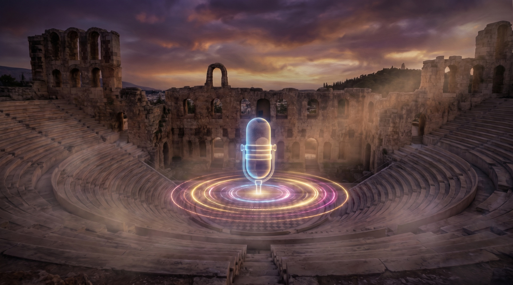

Üretken YZ
İlk Çağ'dan Üretken Zekâya
Fikrin var. Bu 5 saatin sonunda fikrin değil, filmin olacak.

Açılış · Merak
"Merak, bilgeliğin başlangıcıdır."
Sokrates agorada sorardı; sen prompt satırında soracaksın. Merakla başlayan her soru, doğru araçla bir esere dönüşür. Bugün merakını senaryoya, senaryonu görsele, görselini sese ve filme dönüştürüyorsun — adım adım, birlikte.
Program · 5 Saat
Beş tablet.
Beş dönüşüm.
01Giriş ve Araçlar
60 dk
02Senaryo & Prompt
60 dk
03Görsel Üretimi
60 dk
04Ses Üretimi
60 dk
05Video & Kurgu
60 dk

Sahne · Ses
Amfitiyatro senindi.
Artık sahne dijital.
İlk Çağ'da sesini duyurmak için taş basamaklar yetiyordu. Bugün sesini klonluyor, çok dilli konuşturuyor, filminin anlatıcısı yapıyorsun. Mikrofon yok — sadece sen ve yapay zekâ.
Günün Çıktısı
Eğitimden bu videoyla çıkıyorsun.
Sunum dosyası değil, "not aldım" değil — senin yazdığın, seslendirdiğin ve kurguladığın 1.5 dakikalık profesyonel dikey video. Reels'e, tanıtıma, portfolyona hazır.
Yolculuk Devam Ediyor
Gün 2: Vibe Coding — Agora'dan Agent'a →
Bugün üretmeyi öğrendin. Yarın, senin için üreten dijital ekibini kuruyorsun.